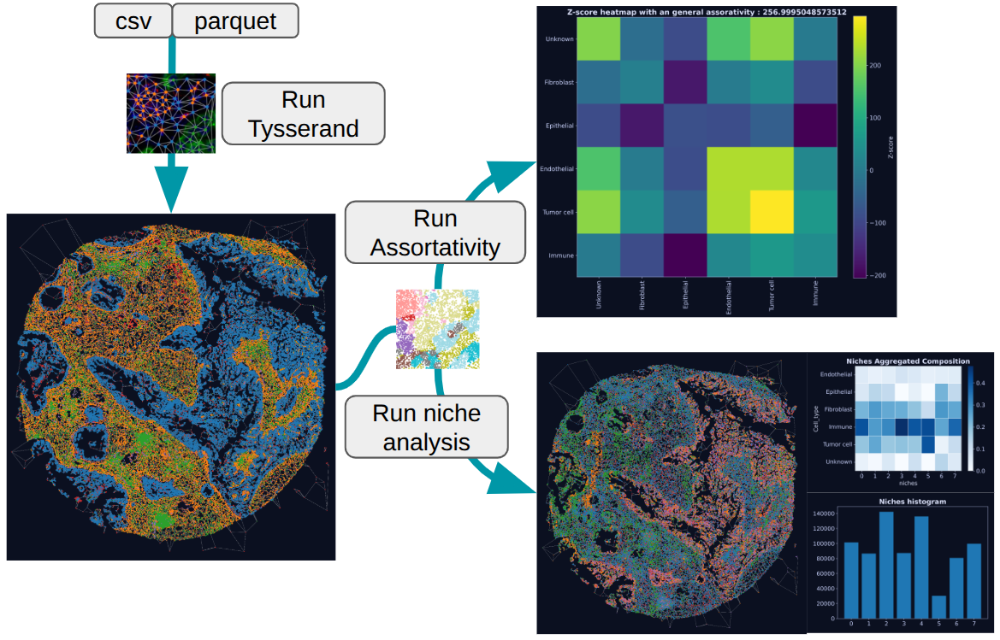
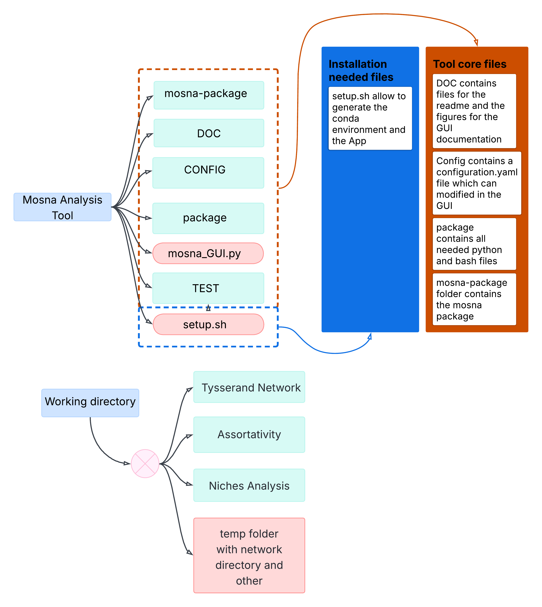

How the interface works
The aim is to simply use Tysserand and MOSNA, which allows you to perform your own spatial analysis using a step-by-step operating mode.
Start-up and work directory
When launching, a folder must be selected. Without a working directory, the interface is automatically disabled. This working directory specifies the location of the Output folder, where the results will be stored, as well as the intermediate files in temp.
General functioning
This interface requires at least one CSV or Parquet file where the cells are referenced and have coordinates and attributes. This allows nodes and edges to be created via Tysserand. If the coordinates are not present but you already have the edges, you can proceed directly to the assortativity and niche analysis stage by creating files with specific names and formats.

Input files must have a specific format:
- To run Tysserand, they should be called '*_patient-idpatient_sample-id_sample.extension'
- And for directly use Mosna you must avec two file per sample (nodes and edges) et they must be nammed as nodes_patient-id-patient_sample-id-sample.extension and edges_....
Knowing that it is not necessary to have the separation, for example, it can only be patient.
How the module is organized
You must know that you're working directory is also you're saving directory.

Explanation of Tysserand Networks parameters
| Parameter Name | Type | Description |
|---|---|---|
| Nodes directory | string | folder where you store all your spatial data |
| Patient column name | string | Name of the first level of division for your file for example: 'patient' |
| Sample column name | string | Name of the second level of division if it exists |
| Extension | string | Extension of all files |
| X coordinates column | string | Name of the column containing the X spatial coordinates |
| Y coordinates column | string | Name of the column containing the Y spatial coordinates |
| Phenotype column | string | Column defining the phenotype of each cell |
| Edges method | string | Method used to compute edges |
| Min neighbors | int | Minimum number of neighbors for the KNN edges |
| CPU | int | Number of CPUs used for the parallelization process |
Explanation of Assortativity parameters
| Parameter Name | Type | Description |
|---|---|---|
| Network directory | string | folder where you store all your edges and nodes. Default if you run it after Tysserand Run |
| Patient column name | string | Name of the first level of division for your file for example: 'patient' |
| Sample column name | string | Name of the second level of division if it exists |
| Extension | string | Extension of all files |
| Phenotype column | string | Column defining the phenotype of each cell |
| Index | string | Name of the column for the cells reference |
Explanation of Niches Analysis parameters
| Parameter Name | Type | Description |
|---|---|---|
| Network directory | string | Folder where you store all your edges and nodes. Default if you run it after Tysserand Run |
| Saving directory | string | Name of the saving folder to multiply the analysis |
| Patient column name | string | Name of the first level of division for your file for example: 'patient' |
| Sample column name | string | Name of the second level of division if it exists. |
| Phenotype column | string | Column defining the phenotype of each cell |
| Processing method | string | Choose the method of processing (per sample (work in progress) or aggregation) |
| Niches method | string | Choose the method of niche analysis (NAS, SCAN-IT (work in progress)) |
| X coordinates column for niches | string | X column if it exist to rebuild all networks with niches clustering |
| Y coordinates column for niches | string | Y column if it exist to rebuild all networks with niches clustering |
| Parameters for niches analysis (reduction and clustering of neighbourhood statistics) | ||
| order | int | Neighborhood order used in NAS aggregation. 'order=1' uses direct neighbors only, while higher values include more distant neighbors in the graph |
| stat_funcs | List | Statistical functions applied to aggregated neighbor features in NAS, such as 'mean', 'std', 'max', or 'median' |
| stat_names | List | Names associated with 'stat_funcs', used to label the generated feature columns |
| clusterer_type | string | Clustering method used to define niches or groups, for example 'gmm', 'spectral', 'hdbscan', or 'leiden' |
| n_clusters | int | Number of clusters to produce for methods that require it, mainly 'gmm' and 'spectral' |
| reducer_type | string | Dimensionality reduction method applied before clustering, such as 'umap' |
| metric | string | Distance metric used to compare observations, for example 'euclidean', 'manhattan', or 'cosine' |
| resolution | float | Granularity parameter specific to Leiden clustering. Lower values usually give fewer clusters, higher values give more |
| n_neighbors | int | Number of neighbors used to build the local structure of the data, especially in UMAP or graph construction |
| min_dist | float | UMAP parameter controlling how close points can be in the reduced space. Smaller values usually produce tighter groups |
| dim_clust | int | Number of dimensions kept in the reduced space for clustering |
| min_cluster_size | int | Minimum cluster size for HDBSCAN. Smaller values allow rare clusters, larger values make clustering more conservative |
| k_cluster | int | Number of neighbors used during the clustering step when building or refining the graph structure |
| normalize | string | Normalization method applied to niche composition features before the predictive model, for example 'total', 'obs', 'niche', or 'clr' |
Explanation of Assortativity and Niches Analysis
You must know what are the those metrics/analysis